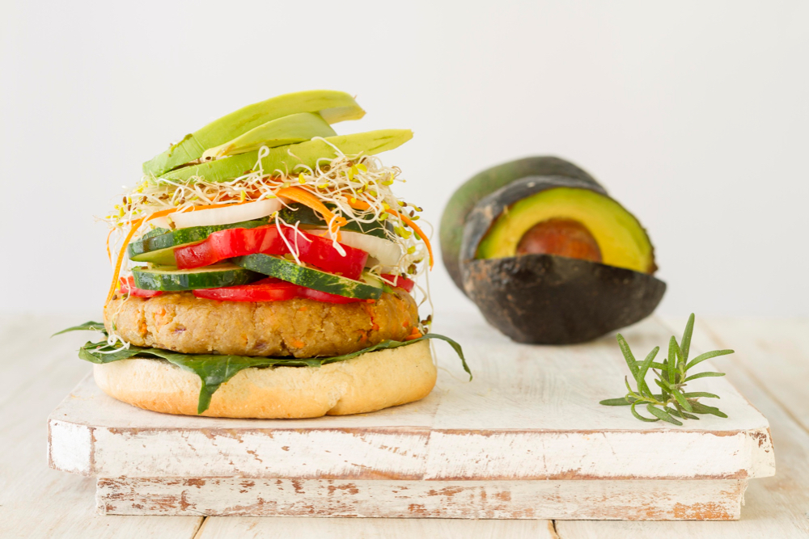
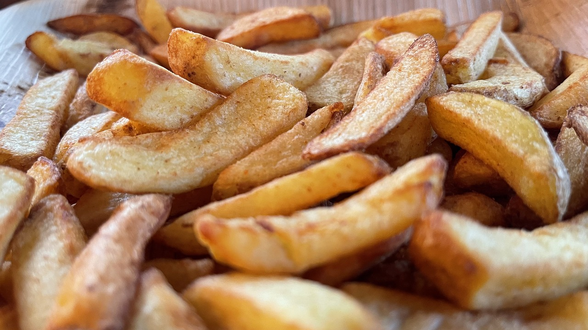

Unser Signature-Gericht ist der "Gourmet-Burger Deluxe". Saftiges Rindfleisch, geschmolzener Käse, knackiger Salat und eine geheime hausgemachte Sauce machen diesen Burger zu einem wahren Gaumenschmaus.

Grünen Genuss-Burger" an, der mit einer leckeren Gemüse-Patty-Variante und frischen Avocado-Scheiben belegt ist.

Wenn du nach einer leichten Option suchst, empfehlen wir unseren "Frühlings-Salat". Frische grüne Blätter, bunte Gemüsesorten und ein erfrischendes Dressing machen diesen Salat zu einer gesunden und leckeren Wahl.

Für diejenigen, die es gerne knusprig mögen, haben wir unsere berühmten "Truck-Fritten". Handgeschnittene Kartoffeln werden goldbraun frittiert und mit einer Prise Salz gewürzt. Perfekt als Beilage oder einfach zum Snacken zwischendurch.

Natürlich haben wir auch eine Auswahl an erfrischenden Getränken, um deinen Durst zu stillen. Von hausgemachten Limonaden bis hin zu frisch gebrühtem Eistee ist für jeden etwas dabei.
Wir hoffen, wir konnten deinen Appetit wecken!.